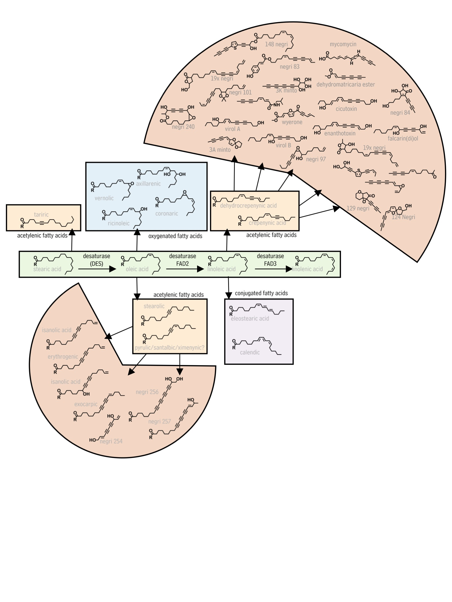

Though we often do not think about it, plants surround most of us on a daily basis as we work, travel, and eat. Most of us consume plant chemicals at three meals a day, take plant-derived chemicals as medicines, experience colors and aromas created by plant chemicals, and drink beverages based around plant chemistry throughout the day. This unconscious ubiquity makes plants a fantastic tool with which to teach and learn about chemistry and biochemistry. Below I describe some of the lesson sets I currently use to teach plant chemsitry and provide links the underlying materials.
Analytical Chemistry of Plant Natural Products
Plants produce a massive array of chemicals to enhance their fitness. Relatively large efforts have been made to understand certain classes of these compounds, including phenolics, terpenoids, and alkaloids. By comparison, there has been almost no progress towards understanding fatty-acid derived natural products, even though more than 250 such compounds are already known, many of which have unique and potent bioactivites. I am currently focused on answering the following questions in this area:
Learning objectives are to be able to answer the following questions:
- What are the major classes of specialized metabolites and their characteristics?
- What are some major ways in which specialized metabolic enzymes differ from core metabolic enzymes?
- How are core metabolism and specialized metabolism related?
- What are the major hypothesis describing how specialized metabolic pathways evolve?
- Terminology - exaptation; genes: homologs, paralogs, orthologs; ancestral state reconstruction
Biochemistry and Evolution of Lineage-specific Metabolic Enzymes
Plants produce a massive array of chemicals to enhance their fitness. Relatively large efforts have been made to understand certain classes of these compounds, including phenolics, terpenoids, and alkaloids. By comparison, there has been almost no progress towards understanding fatty-acid derived natural products, even though more than 250 such compounds are already known, many of which have unique and potent bioactivites. I am currently focused on answering the following questions in this area:
Learning objectives are to be able to answer the following questions:
- What are the major classes of specialized metabolites and their characteristics?
- What are some major ways in which specialized metabolic enzymes differ from core metabolic enzymes?
- How are core metabolism and specialized metabolism related?
- What are the major hypothesis describing how specialized metabolic pathways evolve?
- Terminology - exaptation; genes: homologs, paralogs, orthologs; ancestral state reconstruction